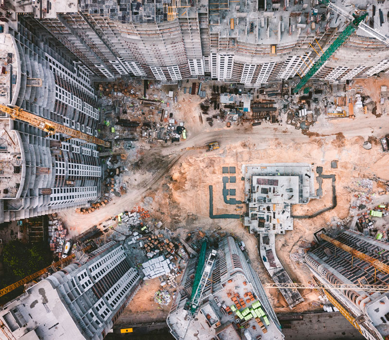
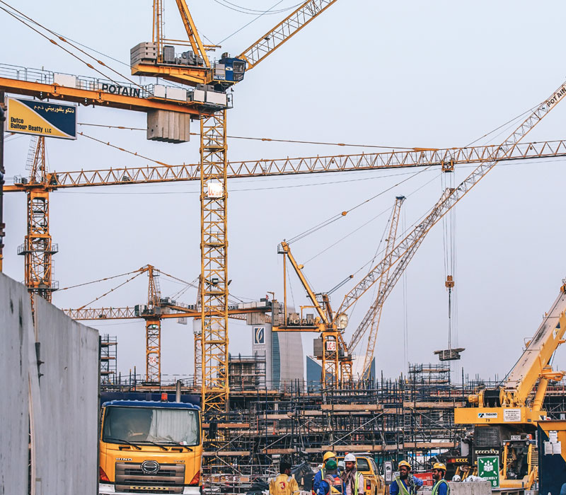

COST GUIDE
Construction Cost in Islamabad
Learn why rates change, how covered area affects estimates, and how to compare quotations without relying on an outdated single number.
Explore answers →Practical guides for homeowners, plot owners and investors who want to understand construction in Pakistan before making expensive decisions.
Read FAQsDiscuss Your ProjectWe are building this section around real questions people ask before and during construction. Each topic will eventually connect to detailed guides, project examples and relevant SMA Builders services.
Learn why rates change, how covered area affects estimates, and how to compare quotations without relying on an outdated single number.
Explore answers →
Understand foundations, RCC, masonry, roof slabs and the difference between structural work and finishing.
Explore answers →
Learn how cement, steel, bricks and finishing materials affect performance, durability and budget.
Explore answers →A practical roadmap covering drawings, BOQ, contractor selection, scope, payment stages and project monitoring.
Explore answers →You should not need a civil-engineering degree to understand the major decisions in your own construction project. Our guides are written in plain language, with technical terms explained when they are necessary.
For the complete explanations, open the full FAQ library.
Grey structure generally refers to the main structural and masonry stage before most final finishing work. Depending on the contract, it can include excavation, foundations, RCC work, masonry and roof slabs. Because package definitions vary, always ask for a written inclusion and exclusion list.
The quotations may not be pricing the same scope. Differences can come from covered area, material brands or grades, structural assumptions, labour, finishing specifications, exclusions and the way variations are handled. Compare the documents item by item instead of looking only at the headline rate.
Start with the scope. Make sure the quotation refers to the correct drawings and covered area, lists major materials and finishing standards, identifies exclusions, explains payment stages and states how changes will be priced. If a term is unclear, ask the contractor to explain it in plain language before you sign.